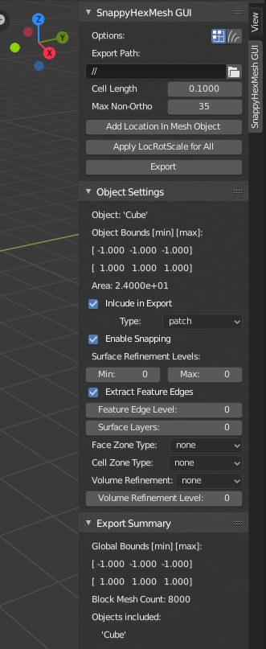
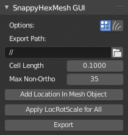

SnappyHexMesh GUI Addon for Blender¶
Introduction¶
SnappyHexMesh is a volume mesh generation tool for OpenFOAM®, the open source CFD (computational fluid dynamics) toolbox. SnappyHexMesh GUI add-on for Blender (“the add-on” hereafter) is meant to aid OpenFOAM users to use Blender as a CFD pre-processing tool. The aim is to
- Ease the workflow for updating, modifying and exporting 3D surface meshes to OpenFOAM.
- Allow definition of most common SnappyHexMesh settings via Blender GUI, to reduce need for manual writing of OpenFOAM dictionary definitions.
- Require minimal Blender skills. Geometry can be modelled in any 3D modelling / CAD program which exports a surface mesh format that can be imported to Blender, such as STL or Wavefront OBJ. Add-on is operated via panels in Blender’s GUI.
The creation of OpenFOAM dictionary files is based on string replacements using template files located in the add-on’s skel directory. The add-on has been tested on Blender 2.82 and OpenFOAM Foundation version 7 of OpenFOAM.
Current Status and Features¶
Currently implemented features include:
- Creation of basic OpenFOAM case structure, including export of dictionary files (most importantly snappyHexMeshDict) and meshes as STL files
- Optional creation of definition file for hexahedral base volume mesh with a defined cell size (blockMeshDict)
- Calculation of cell count for block volume mesh
- Definition of Surface Refinement Levels for surface meshes
- Creation of Feature Edges definition file (surfaceFeaturesDict)
- Definition of Surface Layers per surface
- Calculation of minimum and maximum bounds and surface area for each mesh. These information are also written to snappyHexMeshDict as comments.
- Creation of Face Zones and Cell Zones from surface meshes
- Specification of Refinement Regions (Volumes)
Installation and Start-up¶
- It is suggested to use newest version of Blender, download Blender here.
- Add-on code is available at https://github.com/tkeskita/snappyhexmesh_gui. To download add-on from Github, Select “Clone or download”, then “Download ZIP”.
- Start Blender, go to “Edit” –> “Preferences” –> “Add-ons” –> “Install” –> open the add-on zip file.
- Activate the “SnappyHexMesh GUI” add-on in Preferences. Add-on is located in Object category of Blender add-ons.
- Click “Save Preferences” to autoload add-on every time Blender is started
Add-on visibility¶
Add-on is visible in Blender’s 3D Viewport in Sidebar as a separate tab in Object Mode. To view the add-on panels, you must
- Select a mesh object (in 3D Viewport or in Outliner)
- View Sidebar (“View” –> “Toggle Sidebar” or press “N” key in 3D Viewport)
- Select “SnappyHexMesh GUI” tab in the Sidebar
Quickstart¶
- Create surface meshes in any suitable 3D modelling tool and export in STL/OBJ format
- Import meshes to Blender (“File” –> “Import”) or model geometry directly in Blender
- Adjust the add-on settings per object in Blender
- Save Blender file to an empty case folder
- Click “Export” button in the add-on to create OpenFOAM directories and files under case folder
After export from Blender, you should be able to run following OpenFOAM commands in case folder in order:
- blockMesh
- surfaceFeatures
- snappyHexMesh
- checkMesh
Panels and Settings¶
SnappyHexMesh GUI consists of three main Panels: SnappyHexMesh GUI (top panel), Object Settings (middle panel) and Export Summary (bottom panel). By default all panels are expanded.
SnappyHexMesh GUI Panel¶
This panel contains overall settings and tool buttons. You can hover mouse cursor over fields to see tool tips for more information.
- Options with two toggle icons:
- Do Snapping Phase
- Do Layer Addition Phase
- Export path defines path name where the add-on creates the OpenFOAM case files when the Export tool is run. The default value “//” means that the case folder is the same folder where Blender file is saved.
- Generate Block Mesh indicates that blockMeshDict is to be generated during export using Cell Length as a measure for cubical cell sides.
- Cell Length is the target length for the block mesh cube side, which will be created after export by running the OpenFOAM command blockMesh.
- Max Non-Ortho is the volume mesh quality measure for maximum non-orthogonality for SnappyHexMesh. Note: A small value produces mesh that is good for the numerical solution of flow equations, and a high value yields mesh that fits to surfaces better and allows better surface layer coverage (if layers are added).
There are three tools provided by the addon, which are shown as buttons:
- Add Location In Mesh Object will add an Empty object to Blender scene. The coordinates of this object is applied to specify the Location In Mesh for snappyHexMesh. If this object does not exist, zero coordinates are used for Location In Mesh.
- Apply LocRotScale For All is a convenience tool for Blender modellers, which resets the Location, Rotation and Scale properties of all mesh objects to zero values. It is not necessary to run this tool to get correct location, rotation and scaling of the mesh in export. It is safe to ignore this tool, unless you use special Blender modelling features whose operation depends on object location, rotation and scale (e.g. Modifiers).
- Export tool creates and saves the OpenFOAM case files under Export path using the overall settings in this panel and Object Settings for each mesh object included in the export.
Object Settings Panel¶
This panel shows settings for the active (selected) mesh object.

The panel top part shows information about the object. These information are also added as comments in snappyHexMeshDict upon export:
- Object row shows the name of the active object.
- Object Bounds [min] [max] shows the minimum and maximum coordinates of two box corners which span the volume included by the mesh object (bounding box).
- Area shows the summed surface area of all faces included in the object. Warning: Includes mesh errors, like overlapping faces, if there are any.
Rest of the panel includes object settings:
Include in Export check box is used to mark which mesh objects are to be included in export.
Type specifies the OpenFOAM patch type for this object.
Enable snapping check box marks inclusion/exclusion of this object for SnappyHexMesh snapping phase.
Surface Refinement Levels, Min and Max specify the minimum and maximum level of cell refinements made next to the surfaces of this object.
Extract Feature Edges check box marks whether Feature Edges (sharp edges) are to be extracted into eMesh format from this object (done by running the featureSurfaces OpenFOAM utility). If Feature Edges are extracted, then they are also assumed to be included for Feature Edge Snapping in SnappyHexMesh.
Feature Edge Level defines a separate cell refinement level for Feature Edges.
Surface Layers specifies the number of surface layers that are to be added to surfaces of this object. Addition of surface layers also requires that the Do Layer Addition Phase option icon at top is activated.
Face Zone Type decides the type of face zones that are to be created for surface:
- none: No face zone or cell zone are to be created.
- internal: Face zone is created with internal faces (each face is shared by two cells)
- baffle: Face zone is created as baffles (overlapping unshared boundary faces).
- boundary: Face zone is created as boundaries (unshared boundary faces).
Note: Face zone name is same as object name.
Cell Zone Type defines the type of cell zones in relation to surface mesh, which is assumed to define a manifold surface which closes a volume:
- none: No cell zone is to be created.
- inside: Inside of the closed volume is to be included in cell zone.
- outside: Outside of the closed volume is to be included in cell zone.
Note: Cell zone name is same as object name.
Note 2: Cell zones requires face zones to be created as well.
Volume Refinement specifies that some cells are to be refined accordingly:
- none: No refinement.
- inside: Cells inside of the closed volume are to be refined.
- outside: Cells outside of the closed volume are to be refined.
Volume Refinement Level shows the number of refinements for volume refinement.
Export Summary Panel¶
This panel summarizes the overall properties of export.

- Global Bounds [min] [max] shows the minimum and maximum coordinates of the bounding box for all mesh objects included in the export.
- Block Mesh Count is an estimate for the number of cubic cells in Block Mesh which covers the Global Bounds using cube side length specified in Cell Length parameter. Block Mesh will be created by running OpenFOAM command blockMesh.
- Objects included lists all the mesh objects in Blender file, which will be exported when Export tool is run.
Feedback¶
Example¶
A vessel example is located in the add-on’s example folder called vessel.blend, which showcases some of the features.
Vessel geometry, wall, zone and refinement volumes in surface mesh format viewed in Blender

Resulting volume mesh from SnappyHexMesh viewed in Paraview
FAQ¶
Q: Why Blender?
A: Mainly because of Blender’s GUI Python API, 3D Viewport and surface mesh modelling tools. Blender has powerful tools for polygon surface modelling and modification, and is suitable also for precision modelling required by engineering/scientific applications, although the learning curve to take advantage of all features is steep.
OpenFOAM Trade Mark Notice¶
This offering is not approved or endorsed by OpenCFD Limited, producer and distributor of the OpenFOAM software via www.openfoam.com, and owner of the OPENFOAM® and OpenCFD® trade marks.